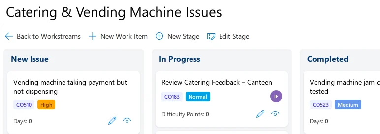
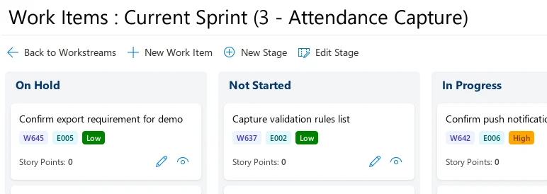
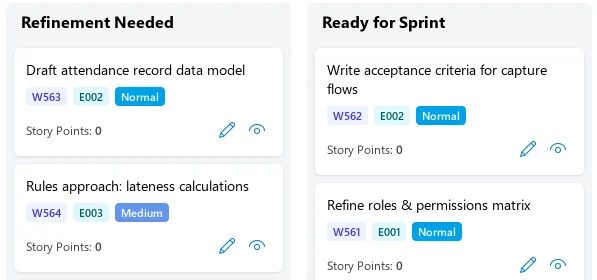
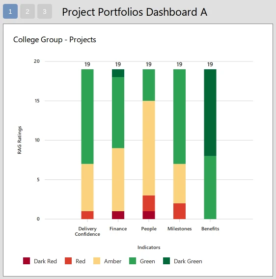

Kanban boards for everyday work. Sprints for delivery teams.
Group WorkStreams gives each stream of incoming work, such as complaints or HR requests, its own board and stages. In Agile Sprints, Scrum teams plan stories in a prioritised backlog and deliver them in sprints and releases.
An independent promoter of ZedX runs this site. Swiftpro Corporation Ltd makes ZedX, and demo requests go to them.




Screens from the ZedX demo, which uses sample data for a college group. The demo sets up an account for you, so there’s nothing to register. Try the demo yourself
Group WorkStreams takes everyday work out of spreadsheets
Complaints, catering faults, HR requests and finance queries can each become a workstream, with its own Kanban board, stages and team. Everyone works from one board instead of a spreadsheet, and each item shows who has it and how urgent it is.
It suits operational, administrative and service teams whose work arrives every day, outside any project plan or sprint. A dashboard shows managers where work is building up, so they don’t have to ask each person for an update.
See how Group WorkStreams works

Agile Sprints takes Scrum teams from backlog to release
Epics and user stories wait in a prioritised backlog. At sprint planning, the team estimates each story in story points and takes on only what its capacity allows.
During the sprint, the board shows what is in progress, finished or blocked, and stand-up reporting is automated. At the end, the team reviews its velocity and any work carried over, then formally closes the sprint. Stories are assigned to planned releases, which can span several sprints.
See how Agile Sprints works


Which app fits your work?
Both apps put work on boards. Choose by how work reaches your team and how far ahead you plan it.
| Group WorkStreams | Agile Sprints | |
|---|---|---|
| Who it suits | Operational, administrative, service and departmental teams with a steady flow of requests and cases. | Teams delivering software, technology projects or other work in Scrum or another sprint-based method. |
| How work arrives | At any time, as requests, cases, issues and routine jobs. | As epics and user stories in a prioritised backlog, planned before each sprint. |
| How it is planned | There is no fixed cycle. Work items move through the workstream’s stages as people handle them. | In timeboxed sprints. The team estimates stories in story points and fills each sprint up to its capacity. |
| Board views | Backlog, Current Stages, Epic and Archived. A workstream can also be shown as a simple list or a timeline. | Backlog, Current Sprint, Planned Sprints, Historic Sprints, Epics and Archived. |
| How progress is reviewed | On dashboards of workload, progress and bottlenecks across workstreams, including how many items are critical. | In daily stand-ups and sprint reviews, using completion, velocity and carried-over work. |
| Editions | Currently included in Home, Professional and Group. Available in Corporate, Enterprise and Enterprise Plus. | Currently included in Professional and Group. Available in Corporate, Enterprise and Enterprise Plus. |
Need both? The apps share a login, and each works on its own or with the other. A team can run Group WorkStreams alongside Agile Sprints to keep operational and ad-hoc requests out of the sprint. When a workstream’s work needs sprints, it can be linked to Agile Sprints without entering the data twice.
Leaders follow progress in Project Portfolios
The boards belong to the teams doing the work. Project Portfolios, a third ZedX app, is for the people who oversee that work: PMOs, programme managers and senior leadership teams.
Project managers send it a structured update at agreed intervals, such as monthly or quarterly. Each update rates delivery confidence red, amber or green and adds a progress note, achievements, blockers, risks, dependencies and any support needed. Reminders go out automatically when updates are due, so less time goes on chasing them.
Dashboards show delivery health across portfolios, programmes and projects. Trends show whether confidence is improving, stable or getting worse.
A project can link its workstreams to Group WorkStreams or Agile Sprints. Project Portfolios then sees their progress as a summary in each update. The individual tasks stay on the team’s board.
Project Portfolios also covers vision and objectives, a portfolio Gantt chart, financial reporting, Excel export and benefits tracking after delivery. Read about Project Portfolios on zedxapps.com


Editions, sign-in and hosting
Both apps run on the ZedX Apps Platform, alongside the other ZedX apps. These details come from the official ZedX website, checked on 8 November 2026.
Editions
- Home
- For individuals, who can invite friends and family. Currently includes Group WorkStreams and Cloe AI. Licensed per user.
- Professional
- For professionals and small to medium-sized businesses, ideally 1 to 50 users. Currently includes Group WorkStreams, Agile Sprints and Cloe AI. Licensed per user.
- Group
- For independent teams and groups, ideally 1 to 50 users. Currently includes Group WorkStreams, Agile Sprints and Cloe AI. Licensed per user.
- Corporate
- For businesses that want the full range of apps, hosted by ZedX. You choose the apps, and the price combines users with app usage.
- Enterprise
- For government, education and larger organisations. Unlimited users. You choose the apps and a usage allowance for each, such as a number of workstreams.
- Enterprise Plus
- Every current and future ZedX app, with unlimited users and no usage limits.
This site doesn’t show prices. Swiftpro has pricing in several currencies, so ask them through the contact form.
Sign-in and access
- Sign-in
- Single sign-on with Microsoft Entra ID.
- Permissions
- Role-based permissions follow your organisation’s structure. Teams work in their own areas, and authorised users can see across departments, business units or the whole organisation.
- One platform
- Every ZedX app shares one login, one interface and your organisation’s structure. You can start with one app and add others later.
- Cloe AI
- An AI assistant built into ZedX with OpenAI technology. It answers questions, gives guidance and prepares summaries. What it can do depends on the app and on the information you can access.
Hosting and integration
- Hosting
- ZedX hosts the Home, Professional, Group and Corporate editions. Enterprise and Enterprise Plus can be deployed in your own Microsoft Azure subscription or other agreed infrastructure, for more control over hosting, integration and data.
- Integration
- Enterprise deployments can connect ZedX to the applications and data sources you already use, through its APIs. Swiftpro assesses and agrees each integration with you.
- Apps on Demand
- Swiftpro can build extra workflow apps for your own processes from ZedX’s reusable components. You pay for consultancy and a subscription, and a suitable app carries no separate development charge.
- Technology
- React, C# and .NET, Microsoft SQL Server and Microsoft Azure, connected through APIs.
Before you ask for a demo
Who runs this website?
An independent promoter of ZedX. Swiftpro Corporation Ltd develops and owns ZedX. The product details here come from the official ZedX website, and the screenshots come from the ZedX demo.
What happens when I request a demo?
The button opens the contact form on zedxapps.com, which Swiftpro uses for demo requests and questions. Your message goes to Swiftpro, and their form says they will get back to you. It helps to say which app you want to see and roughly how many people would use it.
Can I try ZedX on my own first?
Yes. Anyone can open the ZedX demo, and it creates an account for you automatically. It uses the same sample college data as the screenshots on this site. Swiftpro also lists a free trial from November 2026. You register your organisation, choose the apps you want to try and work in your own workspace. No credit card is needed. Ask Swiftpro how to start one, because zedxapps.com doesn’t link a sign-up page yet.
Which edition includes both apps?
Professional and Group currently include Group WorkStreams, Agile Sprints and Cloe AI, and suit teams of 1 to 50 users. Home includes Group WorkStreams but not Agile Sprints. Corporate, Enterprise and Enterprise Plus let you choose from every ZedX app (see Editions).
Can we use both apps?
Yes. They share a login and run on the same platform, and each also works on its own. Teams that mix sprint work with operational and ad-hoc requests can run Group WorkStreams alongside Agile Sprints. A workstream can also be linked to Agile Sprints when its work needs sprints.
Do the apps include AI?
Yes. Both include Ask Cloe, the Cloe AI assistant built into ZedX. Swiftpro says it uses OpenAI technology and can answer questions, give guidance and prepare summaries. What it can do depends on the app and on the information you can access. Swiftpro adds that it supports people’s judgement and leaves important decisions to them.
How much does it cost?
This site doesn’t show prices. Home, Professional and Group are licensed per user, and Corporate combines users with app usage. Enterprise has unlimited users and is priced on the apps and usage you choose. Enterprise Plus covers every app with no usage limits. Swiftpro has pricing in several currencies, so ask them for figures.
Ask Swiftpro for a demo
Use the contact form on zedxapps.com. Tell Swiftpro which app you’re interested in, roughly how many people will use it and what work you want to run on it. They’ll get back to you. If you’d like to look around first, the ZedX demo is open to everyone.